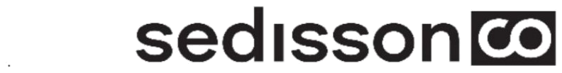

The visible work
What people notice happening.
- Email volume
- Sales headcount
- Paid campaigns
- Content output
- Event attendance
- Software adoption

Book a Strategy Session →Our view of commercial growth / Vol. 01
Good salespeople and strong campaigns matter. But they work much harder when the positioning is clear, the proof is credible and the company learns quickly from the market.
A common misdiagnosis
When revenue slows, most teams reach for more.
More outreach. More advertising. More content. Another tool. Sometimes that is exactly what is needed. But volume cannot rescue an offer people do not understand or a promise they cannot verify.
Often, the harder question is the useful one: is the company clear about where it wins, why buyers should trust it and what the team is learning from the work?
The visible work
What sits underneath
“Before asking the team to do more, make sure the work they are already doing has every chance to succeed.”
The Sedisson Method™
Five parts of the job
Choosing where to compete, which opportunities deserve attention and what to leave alone.
Giving buyers a clear, relevant reason to choose this company over the alternatives.
Making expertise and evidence easy to find, understand and trust.
Helping people, channels and processes pull in the same direction.
Turning what the market says and does into better commercial decisions.
Start with what is true